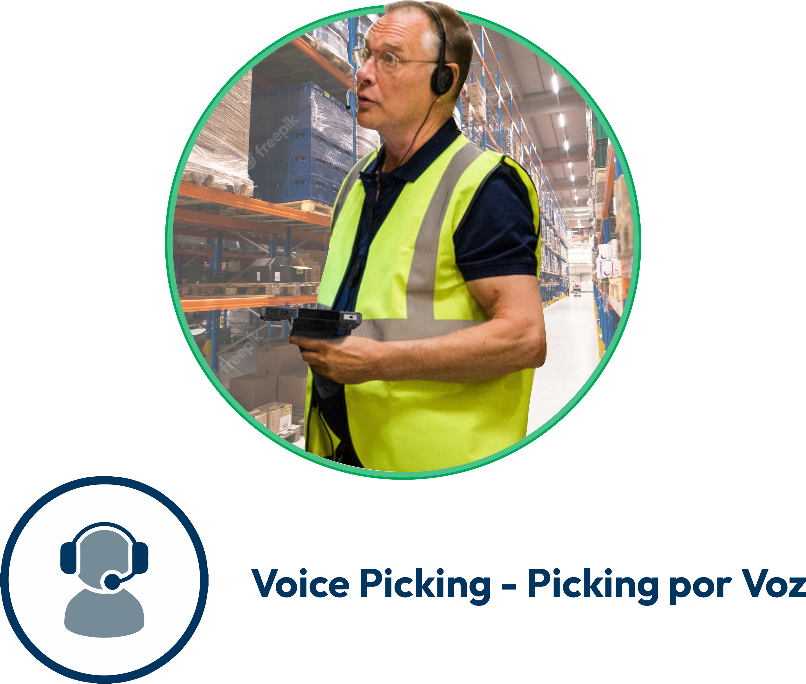

Consultoría
Consultoría en logística
Consultoría en IT
Soluciones Tecnológicas
Sistema de Gestión de Almacenes (WMS)
Sistema de Gestión de Transporte (TMS)
Sistema de Planeación de la cadena de suministro (SCP)
Voice Picking
Acerca de nostros
Quienes somos
Casos de éxito
Menu
Consultoría en logística
Consultoría en IT
Sistema de Gestión de Almacenes (WMS)
Sistema de Gestión de Transporte (TMS)
Sistema de Planeación de la cadena de suministro (SCP)
Voice Picking
Quienes Somos
Casos de Éxito
Voice Picking

El "voice picking," o "picking por voz," es una tecnología utilizada en la gestión de almacenes y centros de distribución para mejorar la eficiencia y precisión del proceso de selección de productos. Esta tecnología se basa en la comunicación entre el sistema de gestión de almacenes (WMS) y los trabajadores del almacén a través de comandos y respuestas de voz.